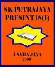

e-Pentaksiran
Sekolah Kebangsaan Putrajaya Presint 18(1)
Masukkan 12 digit nombor MyKid/MyKad tanpa tanda “-” atau ruang.
Menyemak rekod murid...
Laporan Keputusan
Keputusan ini adalah untuk tujuan semakan sahaja.